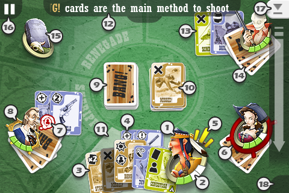
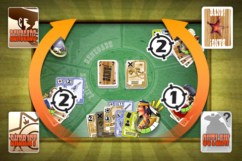
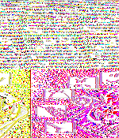

Rollen und Spielziele
Zu Beginn jedes Spiels werden die Rollen vorgestellt: Tippe die einzelnen Rollen an, um mehr über ihr jeweiliges Spielziel zu erfahren.Charakterdetails
Nachdem die Rollen vorgestellt wurden, werden alle Charaktere gezeigt: Tippe die einzelnen Charaktere an, um mehr über sie zu erfahren. Achtung: Im "Leichten Modus" sind die Sonderfähigkeiten nicht verfügbar.Interaktion bei BANG!
Der Bildschirm ist in mehrere Abschnitte unterteilt, die jeweils zu einem Spieler gehören. Das Bild unten zeigt die wichtigsten Elemente auf dem Bildschirm:
- Dein Charakter
- Deine Lebenspunkte
- Deine Kartenhand (unsichtbar für die anderen Spieler)
- Deine ausliegenden Karten (vor dir auf dem Tisch)
- Sonderfähigkeit: Wenn sie verfügbar ist, erscheinen diese gelben Strahlen über dem Charakter. Tippe sie an, um die Fähigkeit einzusetzen (Achtung: Im Einfachen Modus sind die Sonderfähigkeiten nicht verfügbar).
- Rote Ziele befinden sich in Reichweite (du kannst auf sie schießen).
- Der rot umrandete Ballon mit der Glyphe des anvisierten Spielers bedeutet Gefahr: Dieser Gegner kann auf dich schießen (du bist in seiner Schussreichweite).
- Dieser sternförmige Fuß zeigt den Sheriff (man erkennt ihn auch am Hintergrund des Tischabschnittes). Alle wissen, wer der Sheriff ist, während die anderen Rollen geheim sind.
- Der Nachziehstapel
- Der Ablagestapel
- Deine Rolle siehst du in der Tischmitte. Andere Spieler können sie nicht sehen, es sei denn, du bist der Sheriff.
- Die Hilfeleiste: Hier findest du Hinweise, was du tun kannst und Informationen über die ausgewählte Karte (halte den Finger auf der Karte, um die Informationen durchzublättern).
- Die ausliegenden Karten eines Gegners (auf dem Tisch)
- Die Kartenhand eines Gegners
- Ein ausgeschalteter Gegner: Wenn ein Spieler ausgeschaltet wurde, wird seine Rolle im entsprechenden Tischabschnitt offengelegt.
- Hier tippen für das Pausenmenü
- Mit diesem Schieberegler beendest du eine Runde: Schiebe ihn nach unten, um zu passen.
Karten ausspielen
Um mehr über eine Karte zu erfahren, musst du sie antippen und angetippt halten: Es erscheint eine ausführliche Kartenbeschreibung in der Hilfeleiste oben am Bildschirm.Manche Karten müssen auf ein bestimmtes Ziel gespielt werden, die anderen werden vor dir auf dem Tisch ausgelegt oder wandern auf den Ablagestapel.
Um eine Karte aus deiner Hand auszuwählen, tippe erst die Karte an und anschließend das Ziel. Du kannst die Karte alternativ auch auf das Ziel ziehen.
Wenn die Karte kein spezielles Ziel erfordert, tippe die Tischmitte an oder ziehe die Karte dorthin.
Karten, die du ausspielen kannst, werden hell dargestellt. Karten, die du nicht ausspielen kannst, werden ausgegraut.
Du kannst nur eine "BANG!"-Karte pro Runde ausspielen, es sei denn, du benutzt eine "Volcanic" als Waffe. Alle Blauen Karten werden vor dir abgelegt, mit Ausnahme von "Gefängnis", die du auf einen anderen Spieler spielst.
Du kannst immer nur eine Waffe vor dir ausliegen haben (eine neue Waffe entfernt die vorherige). Du kannst niemals zwei Karten mit demselben Namen gleichzeitig im Spiel haben, sehr wohl allerdings zwei Karten mit derselben Wirkung.
In der Hilfeleiste oben am Bildschirm erscheint eine detaillierte Beschreibung der jeweils ausgewählten Karte.
Abstand und Reichweite
Die Mitspieler neben dir haben zu dir einen Abstand von 1. Der nächste Spieler (links oder rechts) hat einen Abstand von 2 und so weiter.Der Abstand kann durch ausliegende Blaue Karten beeinflusst werden. Deine Grundreichweite ist 1, sodass du zu Beginn nicht auf Ziele im Abstand von 2 schießen kannst. Viele Waffen steigern deine Reichweite allerdings auf 2 oder mehr.
Karten mit dem
 -Symbol sind Verteidigungskarten: Sie vergrößern den normalen Abstand dieses Spielers um 1.
-Symbol sind Verteidigungskarten: Sie vergrößern den normalen Abstand dieses Spielers um 1.Ausliegende Karten mit dem -Symbol sind Angriffskarten: Wenn du solche Karten ausliegen hast, verringert sich für dich der Abstand zu anderen Spielern um 1.
Der Zweck von
und ist symmetrisch und beide sind nützlich: Verteidigungskarten für Spieler in der Nähe, Angriffskarten für weiter entfernte Spieler. und beeinflussen alle Karten mit einer Reichweitenangabe.Verwirrt? Keine Sorge!
Alle Abstandsmodifikatoren werden automatisch angewendet, sodass du dir darüber keine Gedanken machen musst. Vergiss nur nicht, dass beide Kartentypen nützlich sind und dass sie dir im Besitz anderer Spieler schaden können.
Taktikansicht
Um den derzeitigen Abstand darzustellen, kannst du Multi-Touch einsetzen und deine Finger zusammenführen, um zur Taktikansicht herauszuzoomen:
- Die großen Ziffern stehen für den derzeitigen Abstand des betreffenden Spielers von dir. Die Abstandsmodifikatoren werden automatisch angewendet.
- Die Karten an den Rändern stehen für die Rollen, die du tippst. Tippe die Karten an, um deinen Tipp zu ändern. Die Rollen ausgeschalteter Spieler und des Sheriffs werden automatisch eingeblendet.
Umschauen
Wenn du die Finger auseinanderführst, zoomst du auf einen bestimmten Spieler und erhältst detaillierte Informationen über ihn. In diesem Beispiel sehen wir uns Paul Regret näher an.
Emoticons

Um Emoticons verwenden, tippen klicken und halten Sie auf das gewünschte Zeichen (einschließlich verkaufen), dann wählen Sie das Emoticon Sie anzeigen möchten.
Netzwerk
Wenn Sie dieses Symbol sehen, ist Ihre Netzwerkverbindung Probleme.